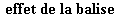
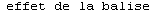
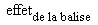

Contenu du cours
I. Création d'un site
1. Les étapes initiales
Avant de créer un site, il faut choisir un hébergeur. Il s'agira d'un serveur, "quelque part" dans le monde, sur lequel seront hébergés les fichiers que vos proposerez à la communauté. il en existe de multiples (il suffit de faire une recherche Internet sur le sujet pour s'en rendre compte !).
Une fois cela fait, selon l'hébergeur choisi, vous disposerez d'un certain nombre d'outils pour mettre en ligne votre site. en général, la fonction de base est le serveur FTP. Vous allez pouvoir déposer sur le serveur les fichiers que vous désirez mettre en ligne. Mais il existe plusieurs outils qui permettent de faciliter cette opération.
2. Outils de production de pages Web
a. Introduction
Ainsi que vous le constaterez, il est possible de créer un site Web entier à l'aide d'un simple éditeur de texte, et d'un client FTP. Fort heureusement, si cette solution reste encore possible pour un dépannage ponctuel sur un fichier, il existe des outils dédiés qui permettent d'automatiser bon nombre des opérations fastidieuses.
b. Éditeurs
Les éditeurs HTML sont des logiciels qui aident à la saisie des balises HTML. Il en existe de deux types :
-
les éditeurs de code proprement dits, similaires à un "environnement intégré de développement" (EDI) pour un langage de programmation, qui permettent de coder les balises directement. Ils permettent de garder un contrôle plus fin et précis sur le code que...
-
... les éditeurs dits WYSIWYG, qui offrent un environnement ressemblant plus à celui d'un logiciel de traitement de texte.
Ces éditeurs modernes offrent de plus des facilités de gestion de site (notion de modèle de document, de projet, gestion efficace des liens internes aux documents, intégration de langages de scripts comme PHP, etc.).
c. Les Weblogs
Ces outils, comme DotClear ou Blogger, par exemple, permettent la saisie, la mise en forme et la mise en ligne automatisée de "journaux" personnels. Conçus à l'origine
comme des outils de publication rapide à destination de quelques internautes désireux de mettre rapidement en ligne leurs
impressions quotidiennes, ils ont évolué en interfaces complexes, mais toujours sur le même principe :
-
Un auteur initial écrit un article à l'aide de l'outil, qu'il met en ligne ;
-
Les visiteurs du journal peuvent soit ajouter des commentaires, soit placer des trackbacks sur l'article, afin de créer un lien entre un article qu'ils écrivent sur leur propre blog, et l'article qu'ils sont en train de lire.
Ces fonctions de base peuvent être étendues, mais on aborde là une autre catégorie d'outils de production : les outils de publication de contenu proprement dits.
d. Outils de publication de contenu
On rencontre principalement deux types de tels outils :
-
les outils entièrement ouverts, comme le format Wiki. n'importe quel internaute peut modifier la page qu'il est en train de lire. Vous pouvez consulter par exemple la Wikipedia, une encyclopédie en ligne maintenue et modifiée uniquement par ses lecteurs.
-
les outils de publication de contenu proprement dits, tels que le populaire SPIP, eZPublish, PHPNuke. Ces outils proposent des interfaces utilisateurs plus ou moins complexes, permettant à des personnes ne connaissant pas le format HTML de publier du contenu sur le Web, sous un forme paramétrable.
Ces outils sont cependant loin d'offrir les mêmes fonctionnalités que ce que peut produire un webmestre expérimenté ; il s'agit de contenu facilement publiable, préformatté. Pour aller plus loin, il est nécessaire de faire appel à un développeur spécialisé.
3. Quel format choisir?
a. Format de document
La question peut sembler étrange. Néanmoins, si vous décidez de créer votre site sans passer par un outil de publication de contenu êtes donc amené à utiliser un éditeur HTML, il va vous falloir opter pour un (ou plusieurs) formats de fichiers. Ce format doit être indiqué d'une manière ou d'une autre à l'outil qui sera utilisé pour consulter le document que vous êtes en train d'écrire. Il se trouve que dans le fichier d'un fichier (X)HTML, cela est réalisé par l'ajout d'une ligne au tout début du fichier, dans le prologue.
Vous pouvez choisir de réaliser un site entièrement sous Flash. Cela n'est cependant pas recommandé dans le cas général, dans
la mesure où cela empêche notamment le référencement correct de votre site. De plus, de récentes modifications à la manière
dont Internet Explorer gère les animations Flash rend ces dernières beaucoup moins ergonomiques.
L'autre alternative est d'opter pour un format HTML ou dérivé (certains d'entre vous ont peut-être entendu parler du langage de script PHP ; mais ce langage, en fait, produit
du HTML). En fait, quatre choix sont possibles, articulés autour du couple HTML/XHTML :
-
HTML Transitionnel: il se déclare avec le prologue<!DOCTYPE HTML PUBLIC "-//W3C//DTD HTML 4.01 Transitional//EN" "http://www.w3.org/TR/html4/loose.dtd">. Cela permet d'avoir accès aux balises d'apparence. -
HTML Strict, déclaré avec le prologue<!DOCTYPE HTML PUBLIC "-//W3C//DTD HTML 4.01//EN" "http://www.w3.org/TR/html4/strict.dtd">. Il oblige à séparer "strictement" contenu et mise en forme. -
XHTML Transitionnel: il se déclare avec le prologue<!DOCTYPE html PUBLIC "-//W3C//DTD XHTML 1.0 Transitional//EN" "http://www.w3.org/TR/xhtml1/DTD/xhtml1-transitional.dtd">>. Cela permet d'avoir accès aux balises d'apparence, tout en respectant une syntaxe plus adaptée à un traitement et une procédure de mise à jour plus automatisée. -
XHTML Strict, déclaré avec le prologue<!DOCTYPE html PUBLIC "-//W3C//DTD XHTML 1.0 Strict//EN" "http://www.w3.org/TR/xhtml1/DTD/xhtml1-strict.dtd">. Il oblige à séparer "strictement" contenu et mise en forme, tout en respectant une syntaxe plus adaptée à un traitement et une procédure de mise à jour plus automatisée.
La différence entre HTML et XHTML réside essentiellement, lors de la phase d'écriture, dans une légère modification de la manière d'utiliser les balises HTML. Par exemple, au lieu d'écrire une balise de saut de ligne <br> en HTML, on écrira <br/> en XHTML. Du point de vue de la maintenance du code, cependant, utiliser le format XHTML permet d'anticiper sur de possibles mises à jour du contenu, et à terme, lorsque l'ensemble des navigateurs en supportera
toutes les propriétés, de faciliter l'insertion de documents d'origines diverses dans la page Web.
Indiquer un "doctype" pour un document facilite notamment le "travail" des navigateurs chargés d'interpréter le code HTML. Avant de lire un document en entier, ils "savent" à quoi s'attendre, ce qui leur permet de passer, éventuellement, d'un
mode d'affichage à un autre (nous y reviendrons quand nous parlerons du langage CSS).
b. Format de caractères
En interne, sur son disque dur, un ordinateur stocke un fichier sous la forme d'une succession de 1 et de 0. Le nombre de
0 et de 1 autorisés pour le stockage d'un caractère est limité. Le nombre total de combinaisons de 1 et 0 possibles est bien
inférieur au nombre total de caractères et de glyphes existant dans les alphabets du monde. L'ordinateur peut donc ne pas
"reconnaître" un caractère 'a' latin, d'un caractère cyrillique ou hébreu. Pour le lui permettre, il est nécessaire d'indiquer
un encodage de caractères pour l'ensemble du document. Cela se fait grâce à la balise <meta> dans l'entête du document (X)HTML. Par exemple, <meta http-equiv="Content-Type" content="text/html; charset=ISO-8859-1"> indique un codage de caractères ISO-8859-1, permettant de taper au clavier et d'enregistrer comme tels les caractères latins
occidentaux (par exemple ceux adaptés au français). Un codage de caractère <META http-equiv="Content-Type" content="text/html; charset=CP-936"> code le chinois simplifié, etc.
4. Validité
Spécifier un "doctype" pour un document offre un avantage supplémentaire, un atout dans les mains du développeur qui a appris à s'en servir.
Beaucoup de temps est perdu, parfois, dans la correction d'un fichier HTML, en raison d'une faute de frappe ou d'une balise non fermée. Cela arrive même aux éditeurs WYSIWYG. Indiquer un "doctype"
et un encodage de caractères permet d'avoir accès à un outil en ligne, également téléchargeable, le validateur HTML du W3C. Cet outil permet de vérifier rapidement les erreurs de syntaxe dans un document.
Avoir un document valide est la première étape dans le débogage d'un site Web. Il faut savoir en effet que les navigateurs ne sont pas tenus de respecter les mêmes conventions d'affichage d'un code invalide. Un code valide, au contraire, est le minimum nécessaire pour assurer qu'un site Web apparaisse de la même manière sur un Mac, un PC sous Windows ou une station Unix. Et cela ne suffit pas...
5. Accessibilité
L'accessibilité est un vaste domaine, qui n'a commencé que récemment à être exploré. On peut y voir une conséquence de l'amélioration
progressive du support des standards du Web par les navigateurs. Aux temps pas si lointains de la "Balkanisation" du Web,
lorsque Netscape et Internet Explorer se livraient une guerre sans merci à coups de balises et d'effets propriétaires, la priorité numéro 1 des développeurs était
de s'assurer que leur site s'affichait grossièrement de la même manière dans les deux navigateurs.
Maintenant que les standards du Web se sont répandus et sont mieux supportés (à la date de révision de ce cours, mai 2006,
au contraire de ce qui se passait il y a encore seulement quatre ans, le facteur limitant est incontestablement, dans ce domaine,
Internet Explorer qui est de loin à la traîne), la classe de problèmes à résoudre pour les développeurs s'est déplacée. Il s'agit maintenant
de faire en sorte que le plus grand nombre de personnes possibles aient accès à leur site.
Il ne faut pas entendre par là un accès ADSL ou par modem... mais bien de la lecture possible du site et des informations qui s'y trouvent. Cela passe, par exemple, par l'ajout de contenu alternatif aux images pour les personnes ayant choisi de ne pas les afficher, ou incapables de les examiner en détails, mais aussi par la présentation soignée de données dans un tableau (fournir un résumé du tableau, des entêtes de colonnes reconnus comme tels par des navigateurs-lecteurs de contenu), la structuration du contenu, des aides à la navigation, etc.
Avoir un code valide est, là aussi, la première étape. Des outils existent ainsi en ligne afin de faciliter ce genre de tests:
Récemment, la loi n° 2005-102 du 11 février 2005 "pour l'égalité des droits et des chances, la participation et la citoyenneté des personnes handicapées" est parue dans le Journal Officiel. Cette loi, qui entrera en application dès la signature du décret et sa publication au Journal Officiel, stipule ainsi que "Les services de communication publique en ligne des services de l'Etat, des collectivités territoriales et des établissements publics qui en dépendent doivent être accessibles aux personnes handicapées." Les sites des administrations et collectivités territoriales devront se mettre en conformité avec la loi dans un délai de trois suivant la parution du décret.
Pour plus d'informations sur ce sujet, vous pouvez consulter WebAIM (en anglais), ou AccessiWeb (en français).
6. Les briques: balises et attributs, commentaires
a. Balises
Les briques élémentaires d'un document HTML sont les balises, dotées ou non d'attributs. Ces balises permettent de structurer l'information. Une balise, sauf exceptions,
s'ouvre et se ferme. Par exemple, pour déclarer un paragraphe, on écrira...
<p>Ceci est un paragraphe.</p>
Il est possible également de déclarer un texte souligné :
<p><u>Ceci est un paragraphe souligné.</u></p>
Le navigateur ne fera pas apparaître les balises (ou tags ou marqueurs) <p>, </p>, <u> ou </u> mais interprétera leurs effets. Le deuxième exemple apparaît comme suit :
La balise est le moyen de communiquer avec le navigateur. Elle apparaît entre les caractères réservés < et >.
b. Attributs
Par exemple,
<p align="right">Ceci est un paragraphe aligné à droite.</p>
a pour effet d'aligner le texte à droite.
La syntaxe utilisée est la suivante :
<balise attribut1="valeur1" attribut2="valeur2" attribut3="valeur3">blabla</balise>
Le séparateur est un espace, l'ordre n'a pas d'importance. La valeur de l'attribut doit être tapée en minuscules, et mise
entre guillemets (pour des raisons de compatibilité XHTML). Certains navigateurs acceptent une écriture sous la forme align=Right, par exemple, mais cela n'est pas conforme aux recommandations du W3C, et les navigateurs récents ne sont pas tenus de respecter
cette syntaxe.
Les attributs permettent de modifier le comportement par défaut d'une balise, ou bien de spécifier des informations indispensables (comme l'adresse d'une image intégrée à la page, ou bien celle d'un lien externe).
c. Commentaires
Indispensables dans certains cas, ils alourdissent cependant le temps de chargement d'une page. Ils n'apparaissent pas dans la fenêtre du navigateur. La syntaxe est la suivante :
<!-- Commentaire -->
II. Le corps d'un document
1. Structure
a. Titres et paragraphes
HTML définit quelques niveaux de titres. Ces titres se codent à l'aide des balises <hn>, où n peut valoir de 1 à 6. Un titre h1 est plus important qu'un titre h2, etc.
Un paragraphe se code entre des balises <p>. On obtient ainsi, par exemple
<h1>Titre de niveau 1</h1>
<p>Et voici un paragraphe...</p>
Vous noterez la présence des balises ouvrantes et fermantes, encadrant le texte.
Il est possible d'aligner un paragraphe à droite, au centre, ou de le justifier, à l'aide de l'attribut align. Ainsi, <p align="justify">(...)</p> permet de justifier le paragraphe. Cet attribut est néanmoins obsolète, et utilisable uniquement avec les types de documents
transitionnels.
b. Listes
Il existe plusieurs types de listes en HTML :
-
les listes à puces , avec les balises
<ul>. Chaque élément de liste se place dans une balise<li>. Par exemple :<ul> <li>Premier élément</li>
<li>Deuxième élément</li>
<li>Troisième élément</li>
</ul> -
Les listes ordonnées, à numéros, se codent à l'aide d'une balise
<ol>; les éléments de liste s'utilisent de la même manière.
Il existe aussi des listes de définitions, des listes de menus, etc.
c. Tableaux
C'est un vaste sujet. Il y a quelques années, beaucoup utilisaient des tableaux pour mettre en page des sites Web. Cette pratique
est aujourd'hui dépassée grâce à la souplesse d'emploi des feuilles de style CSS, et à proscrire car elle met en péril l'accessibilité de la page.
Un tableau est encadré par des balises <table>, avec un attribut obligatoire summary, permettant de donner des informations sur le contenu du tableau. Chaque ligne d'un tableau est entourée par des balises
<tr>. Chaque cellule est entourée de balises <td> (pour des cellules de données), ou des balises <th> (pour des cellules de titre -header). L'encombrement de ces cellules est donné par les attributs colspan (nombre de colonnes) et rowspan (nombre de lignes).
2. Éléments « enligne »
a. Liens
On fait un lien avec une balise <a>. L'URL du lien est donnée par l'attribut href. Par exemple, <a href="http://www.monsite.com">Ceci est un lien</a>.
b. Quelques balises courantes pour le texte
|
Balise |
Signification |
Effet |
|---|---|---|
|
|
emphasis |
|
|
|
fort |
 |
|
|
citation brève |
|
|
|
définition |
|
|
|
extrait de programme |
 |
|
|
sample: échantillon |
|
|
|
Keyboard(clavier) |
|
|
|
variable ou argument |
|
|
|
abréviation |
|
|
|
acronyme |
|
|
|
subscript/indice |
 |
|
|
superscript/exposant |
|
|
|
preformatted |
Table 1. Balises de formatage logique.
c. Images
On insère une image à l'aide de la balise (vide) <img>, de son attribut src et de son attribut alt qui donne un texte de substitution. Les attributs width et height, donnant largeur et hauteur en pixels sont conseillés. Par exemple, <img src="ours.jpg" alt="Une tête d'ours en gros plan" width="100" height="90"> affiche... une tête d'ours, probablement.